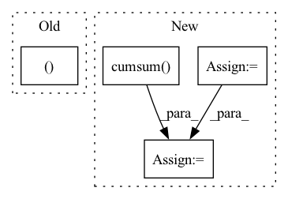

Pattern ID :35829
Before Change
total_anchors /= num_anchors
while total_anchors > 0:
pyramid_levels.append(level)
stride_hh, stride_ww = feature_sizes[0][0] / feature_sizes[level][0], feature_sizes[0][1] / feature_sizes[level][1]
cur_num_anchors = tf.math.ceil(input_shape[0] / stride_hh) * tf.math.ceil(input_shape[1] / stride_ww)
total_anchors -= int(cur_num_anchors)
level += 1After Change
def get_pyramid_levels_by_anchors(input_shape, total_anchors, num_anchors="auto", pyramid_levels_min=3):
feature_sizes = get_feature_sizes(input_shape, [pyramid_levels_min, pyramid_levels_min + 10])[pyramid_levels_min:]
feature_sizes = tf.convert_to_tensor(feature_sizes, dtype="int32")
num_anchors_at_each_level_cumsum = tf.cumsum( tf.reduce_prod(feature_sizes, axis=-1))
if num_anchors == "auto":
// Pick from [1, 3, 9], 1 for yolox, 3 for yolor, 9 for efficientdet
picks = tf.convert_to_tensor([1, 3, 9], dtype=tf.int32)
max_anchors = num_anchors_at_each_level_cumsum[-1] * picks
num_anchors = picks[tf.argmax(total_anchors < max_anchors)]
total_anchors = total_anchors // num_anchors
pyramid_levels_max = pyramid_levels_min + tf.argmax(num_anchors_at_each_level_cumsum > total_anchors) - 1
return [pyramid_levels_min, int(pyramid_levels_max)]
Assign achors In pattern: SUPERPATTERN
Frequency: 3
Non-data size: 4
Instances Fragment ID: 101861986
Project Name: leondgarse/keras_cv_attention_models
Commit Name: df3cf1ce0ac4b02a9c73496b1a583b9a892c7b0a
Time: 2022-03-25
Author: leondgarse@gmail.com
File Name: keras_cv_attention_models/coco/anchors_func.py
M Class Name: AnonimousClass
N Class Name: AnonimousClass
M Method Name: get_pyramid_levels_by_anchors(4)
N Method Name: get_pyramid_levels_by_anchors(4)
M Parent Class:
N Parent Class:
M File Name: keras_cv_attention_models/coco/anchors_func.py
N File Name: keras_cv_attention_models/coco/anchors_func.py
M Start Line: 101
M End Line: 112
N Start Line: 103
N End Line: 114
Before Change
x = self.attn(x, mask = mask) + x
x = self.ff(x) + x
return x, self.to_halt_logits(x)
class PonderTransformer(nn.Module):
def __init__(
self,After Change
if self.causal:
denom = torch.arange(x.shape[-2], device = x.device)
denom = rearrange(denom, "n -> () n ()")
halt_input = x.cumsum(dim = -1) / (denom + 1)
else:
halt_input = x
Fragment ID: 101861990
Project Name: lucidrains/ponder-transformer
Commit Name: f59d217fdff56d2b71302ef65bcd8522f3d34c9e
Time: 2021-08-26
Author: lucidrains@gmail.com
File Name: ponder_transformer/ponder_transformer.py
M Class Name: Block
N Class Name: Block
M Method Name: forward(3)
N Method Name: forward(3)
M Parent Class: nn.Module
N Parent Class: nn.Module
M File Name: ponder_transformer/ponder_transformer.py
N File Name: ponder_transformer/ponder_transformer.py
M Start Line: 108
M End Line: 110
N Start Line: 108
N End Line: 119
Before Change
for idx, pid in enumerate(kept_g_pids):
g_pids_dict[pid].append(idx)
cmc, AP = 0., 0.
for repeat_idx in range(num_repeats):
mask = np.zeros(len(raw_cmc), dtype=np.bool)
for _, idxs in g_pids_dict.items():
// randomly sample one image for each gallery personAfter Change
cmc /= num_repeats
all_cmc.append(cmc)
// compute AP
num_rel = raw_cmc.sum()
tmp_cmc = raw_cmc.cumsum()
tmp_cmc = [x / (i+1.) for i, x in enumerate(tmp_cmc)]
tmp_cmc = np.asarray(tmp_cmc) * raw_cmc
AP = tmp_cmc.sum() / num_rel
all_AP.append(AP)
num_valid_q += 1.
Fragment ID: 101861989
Project Name: vlsomers/bpbreid
Commit Name: dc99054af5216a3f5e4157c8b77102d701b97cb1
Time: 2019-03-07
Author: k.zhou@qmul.ac.uk
File Name: torchreid/eval_metrics.py
M Class Name: AnonimousClass
N Class Name: AnonimousClass
M Method Name: eval_cuhk03(6)
N Method Name: eval_cuhk03(6)
M Parent Class:
N Parent Class:
M File Name: torchreid/eval_metrics.py
N File Name: torchreid/eval_metrics.py
M Start Line: 25
M End Line: 80
N Start Line: 51
N End Line: 80